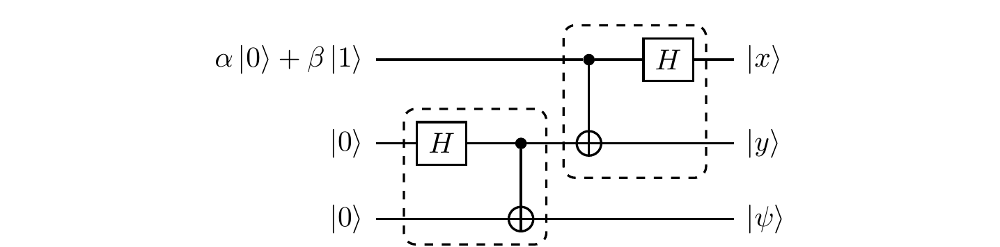
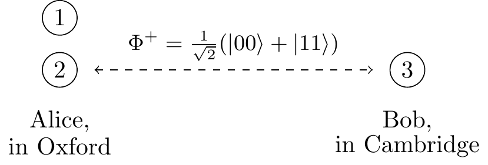

5.9 Remarks and exercises
5.9.1 Entangled or not?
Let a joint state of
Show that, if
|\psi\rangle is a product state, then\det (c_{ij}) = 0 .Show that the converse (
\det(c_{ij})=0\implies|\psi\rangle=|a\rangle|b\rangle ) holds only for qubits. Explain why.Deduce that the state
\frac12\big(|00\rangle + |01\rangle + |10\rangle + (-1)^k|11\rangle\big) is entangled for odd values ofk and unentangled for even values ofk . Express the latter case explicitly as a product state.
There is a lot of interesting physics behind the previous innocuous-looking mathematical statement.
For example, think again about the state
But can you actually use this effect to send a message faster than light? What would happen if you tried?
Hopefully you can see that it would not work, since the result of the measurement is random: you cannot choose the bit value you want to send. We shall return to this, and other related phenomena, later on — it is not at all a lost cause!
5.9.2 SWAP circuit
Show that, for any states
(Swapping).
5.9.3 Controlled-NOT circuit
Show that the circuit below gives another implementation of the controlled-
(Controlled-
5.9.4 Measuring with controlled-NOT
The controlled-
Take a look at the circuit below, where
(?).
Now assume that the top two qubits are in the state
What is this circuit actually measuring?
5.9.5 Arbitrary controlled-U on two qubits
Recall that any unitary operation
Suppose that you can implement any single-qubit gate, and that you have a bunch of controlled-
5.9.6 Entangled qubits
Two entangled qubits in the state
What is the probability that Alice and Bob will register identical results? Can any correlations they observe be used for instantaneous communication?
Prior to the measurements in the computational basis, Alice and Bob apply unitary operations
R_\alpha andR_\beta (respectively), for some fixed values\alpha,\beta\in\mathbb{R} , to their respective qubits:
where the gate
R_\theta is defined by its action on the basis states:\begin{aligned} |0\rangle &\longmapsto \cos\theta|0\rangle + \sin\theta|1\rangle \\|1\rangle &\longmapsto -\sin\theta|0\rangle + \cos\theta|1\rangle. \end{aligned} Show that the state of the two qubits prior to the measurements is\begin{aligned} &\frac{1}{\sqrt2}\cos(\alpha-\beta)\big( |00\rangle + |11\rangle \big) \\- &\frac{1}{\sqrt2}\sin(\alpha-\beta)\big( |01\rangle - |10\rangle \big). \end{aligned} What is the probability that Alice and Bob’s outcomes are identical?
What is the geometric interpretation of the operator
R_\theta ?
5.9.8 Playing with conditional unitaries
The swap gate
Show that the four Bell states
\frac{1}{\sqrt2}(|00\rangle\pm|11\rangle) and\frac{1}{\sqrt2}(|01\rangle\pm|10\rangle) are eigenvectors ofS that form an orthonormal basis in the Hilbert space associated to two qubits. Which Bell states span the symmetric subspace (i.e. the space spanned by all eigenvectors with eigenvalue1 ), and which the antisymmetric one (i.e. that spanned by eigenvectors with eigenvalue-1 )? CanS have any eigenvalues apart from\pm1 ?Show that
P_\pm = \frac12(\mathbf{1}\pm S) are two orthogonal projectors which form the decomposition of the identity and project onto the symmetric and antisymmetric subspaces. Decompose the state vector|a\rangle|b\rangle of two qubits into symmetric and antisymmetric components.Consider the quantum circuit below, composed of two Hadamard gates, one controlled-
S operation (also known as the controlled-swap, or Fredkin gate), and the measurementM in the computational basis. Suppose that the state vectors|a\rangle and|b\rangle are normalised but not orthogonal to one another. Step through the execution of this network, writing down the quantum states of the three qubits after each of the four computational steps. What are the probabilities of observing0 or1 when the measurementM is finally performed?
(Symmetric and antisymmetric projection).

Explain why this quantum network implements projections on the symmetric and antisymmetric subspaces of the two qubits.
Two qubits are transmitted through a quantum channel which applies the same randomly chosen unitary operation
U to each of them, i.e.U\otimes U . Show that the symmetric and antisymmetric subspaces are invariant under this operation.Polarised photons are transmitted through an optical fibre. Due to the variation of the refractive index along the fibre, the polarisation of each photon is rotated by the same unknown angle. This makes communication based on polarisation encoding unreliable. However, if you are able to prepare any polarisation state of the two photons then you can still use the channel to communicate without any errors — how?
5.9.9 Tensor products in components
In our discussion of tensor products we have so far taken a rather abstract approach.
There are, however, situations in which we have to put numbers in, and write tensor products of vectors and matrices explicitly.
For example, here is the standard basis of two qubits written explicitly as column vectors:100
The matrix elements of the tensor product operation
are given by
This product
The tensor product induces a natural partition of matrices into blocks. Multiplication of block matrices works pretty much the same as regular matrix multiplication (assuming the dimensions of the sub-matrices are appropriate), except that the entries are now matrices rather than numbers, and so may not commute.
Evaluate the following matrix product of
(4\times 4) block matrices:\left[ \, \begin{array}{c|c} \mathbf{1}& X \\\hline Y & Z \end{array} \, \right] \left[ \, \begin{array}{c|c} \mathbf{1}& Y \\\hline X & Z \end{array} \, \right] (whereX ,Y , andZ are the Pauli matrices).Using the block matrix form of
A\otimes B expressed in terms ofA_{ij} andB_{ij} (as described above), explain how the following operations are performed on the block matrix:- transposition
(A\otimes B)^T ; - partial transpositions
A^T\otimes B andA\otimes B^T ; - trace
\operatorname{tr}(A\otimes B) ; - partial traces
(\operatorname{tr}A)\otimes B andA\otimes(\operatorname{tr}B) .
- transposition
5.9.10 Hadamard transforms in components
Consider the Hadamard transform
- The output state is a superposition of all binary strings:
\sum_{x\in\{0,1\}^3} c_x|x\rangle . Where in theH^{\otimes 3} matrix will you find the coefficientsc_x ?
Do you want to write down
Consider again the single-qubit Hadamard gate matrix
Using the fact that
(A\otimes B)_{ik,jl} = A_{ij}B_{kl} , or any other method, analyse the pattern of the\pm1 in the tensor product of Hadamard matrices. What is the entryH^{\otimes 4}_{0101,1110} ?For any two binary strings
a=(a_1,\ldots, a_n) andb =(b_1,\ldots , b_n) of the same length we can define their “scalar” product asa\cdot b = (a_1b_1\oplus \ldots \oplus a_n b_n) . Show that, up to the constant(1/\sqrt{2})^n , the entryH^{\otimes n}_{a,b} is(-1)^{a\cdot b} for anyn and for any binary stringsa andb of lengthn .Show that
H^{\otimes n} acts as|a\rangle \longmapsto \left(\frac{1}{\sqrt{2}}\right)^n \sum_{b\in\{0,1\}^n} (-1)^{a\cdot b}|b\rangle A quantum register of
10 qubits holds the binary string0110101001 . The Hadamard Transform is then applied to this register yielding a superposition of all binary strings of length10 . What is the sign in front of the|0101010101\rangle term?
5.9.11 The Schmidt decomposition
An arbitrary vector in the Hilbert space
Any bipartite state can be expressed in this form, but remember that the bases used depend on the state being expanded.
Indeed, given two bipartite states
The Schmidt decomposition follows from the singular value decomposition (often abbreviated to SVD): any
You can visualize the SVD by thinking of
Using the index notation
The Schmidt decomposition is almost unique.
The ambiguity arises when we have two or more identical singular values, as, for example, in the case of the Bell states.
Then any unitary transformation of the basis vectors corresponding to a degenerate singular value, both in
We always use the lexicographic order
00<01<10<11 .↩︎